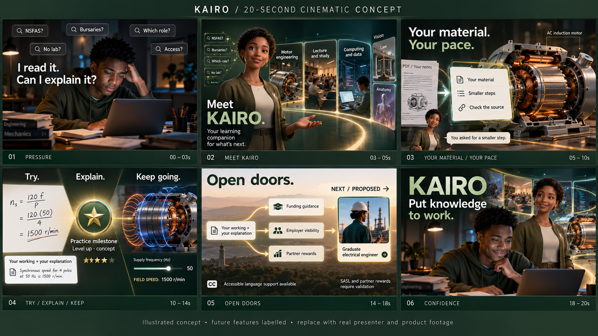

KAIRO / 20-second cinematic pitch concept
Camera motion over generated concept stills. Not moving 3D, the final KAIRO asset, actual product footage or your likeness. Scratch voice. Employer visibility and rewards are proposed. SASL remains in development. No autoplay.
TranscriptFull shot and sound treatment
